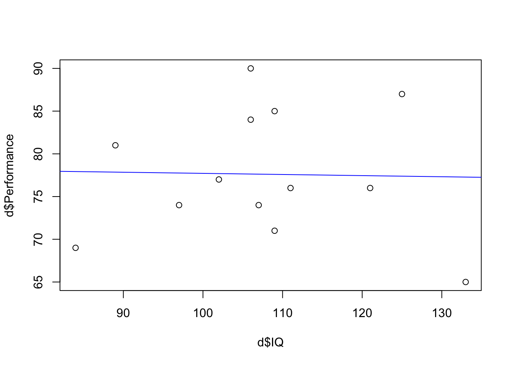

Section 1: Longhand Calculations - useful for WBA1 but not on the class test
Read in the data
This is a reduced set of values retrieved from Margriet’s first lecture from last year, where she demonstrated simple correlation.
d <-read_csv("Covariance_Data.csv") # calling my dataframe d to save typing!
Rows: 13 Columns: 5
── Column specification ────────────────────────────────────────────────────────
Delimiter: ","
dbl (5): Participant_ID, Performance, IQ, Motivation, Social_Support
ℹ Use `spec()` to retrieve the full column specification for this data.
ℹ Specify the column types or set `show_col_types = FALSE` to quiet this message.
Correlation review
Correlations are associations between a pair of variables. Two numerical variables are needed to compute a correlation.
Participant_ID Performance IQ Motivation Social_Support
Min. : 1 Min. :65.00 Min. : 84.0 Min. :44.00 Min. :50
1st Qu.: 4 1st Qu.:74.00 1st Qu.:102.0 1st Qu.:60.00 1st Qu.:58
Median : 7 Median :76.00 Median :107.0 Median :62.00 Median :67
Mean : 7 Mean :77.62 Mean :107.6 Mean :66.23 Mean :65
3rd Qu.:10 3rd Qu.:84.00 3rd Qu.:111.0 3rd Qu.:68.00 3rd Qu.:73
Max. :13 Max. :90.00 Max. :133.0 Max. :93.00 Max. :80
All variables are showing as numerical at this point - we know this because the summary prints out min and max values. We can also see this when we expand the dataframe in the environment pane by the shortened “num” with each variable.
If we were going to perform a regression, we would transform the Participant_ID variable into a factor, since the values are not numerical but represent individual persons. A simple correlation, however, does not take the individual scores into account however, so this is no necessary at this point.
Formulae for longhand calculations of Pearson’s r correlation coefficient
In PSYC122, Margriet walked you through a calculation of variance and covariance to give you the values needed to compute a Pearson’s r by hand: Here are the formulae again:
Variance:
\[
\frac{\Sigma(X-\bar{X})^2}{N-1}
\]
Covariance:
\[
\frac{\Sigma(X-\bar{X})(Y-\bar{Y})}{N-1}
\]
So Covariance needs two lots of mean values - one for the first variable and one for the second variable.
The standard deviation of a variable is the square root of variance:
Standard Deviation:
\[
\sqrt\frac{\Sigma(X-\bar{X})^2}{N-1}
\]
To compute a Pearson’s r (a bivariate correlation of two numerical variables), we need the following formula:
Pearson’s r:
Which uses means and standard deviation components from the formulae listed above
\[
r = \frac{covariance}{(sd_x)(sd_y)}
\] #### Longhand calculations
We need two variables to complete an example:
Lets choose IQ and Performance from the loaded dataset
Looking at the formula we need the following:
The mean of IQ
The mean of Performance
The number of observations
The SD of IQ
The SD of Performance
We will then:
compute the covariance between IQ and Performance (top line of formula)
compute the product of the two SD valules for IQ and Performance (bottom line of formula)
We can use functions in the base R package to generate the values we need to compute the correlation long hand:
# mean valuesIQ_Av <-mean(d$IQ) # mean = 107.62Perf_Av <-mean(d$Performance) # mean = 77.62# Number of observationsN <-nrow(d) # 13 obs# variance valuesIQ_var <-var(d$IQ) # variance = 182.92Perf_var <-var(d$Performance) # vairiance = 54.76# standard deviation valuesIQ_sd <-sd(d$IQ) # SD = 13.52Perf_sd <-sd(d$Performance) # SD = 7.40
All we need now is the covariance values. Let’s look at the formula for covariance again here to reduce the need for scrolling:
\[
\frac{\Sigma(X-\bar{X})(Y-\bar{Y})}{N-1}
\]
Let X represent the IQ variable and Y represent the Perfomance variable. The steps to calculate the top line of the fraction will then be:
subtract the mean of the IQ variable from every observation of IQ
subtract the mean of the Performance variable from every observation of Performance
multiply those paired values together
add those product values all together
We can perform each of those steps and add new columns to our d dataset as we go, so you can see what is happening along the way:
# new columns containing deviations of the observations from the variable mean# 1. subtract the mean of the IQ variable from every observation of IQd$IQ_dev <- d$IQ-IQ_Av # 2. subtract the mean of the performance variable from every observation of performanced$P_dev <- d$Performance-Perf_Av # new column that multiplies P_dev and IQ_dev# 3. multiply those paired values togetherd$P_IQ <- d$P_dev*d$IQ_dev # 4. add those product values all together# note this goes into the Values section of the environment paneP_IQ_sum <-sum(d$P_IQ)
The P_IQ_sum value is the top line of the covariance formula.
Now we have all the values we need to be able to compute (a) the covariance of the Performance and IQ variables, and then Pearson’s r for the strength and direction of the association between the two variables.
To compute the covariance, we simply divide our P_IQ_sum variable by N-1. Note how I wrap the entire command in brackets which is a quicker way to ask R to print the output
# compute the covariance(PIQ_cov <- P_IQ_sum/(N-1))
[1] -2.410256
The covariance between IQ and Performance is showing as -2.41 to 2.d.p.
Back to longhand calculation for Pearson’s r: Now we can compute Pearson’s r using the formula, shown again here to reduce the need for scrolling:
\[
r = \frac{covariance}{(sd_x)(sd_y)}
\]
We have both SD values saved as IQ_sd and Perf_sd, so we divide the PIQ_cov value by the product of Perf_sd and IQ_sd
(PIQ_r <- PIQ_cov/(Perf_sd*IQ_sd))
[1] -0.02408305
Section 2: Shorthand Calculations Using R - useful for WBA1 and could be on the class test
R base packages calculate covariance and correlation with functions that do all the above in one line:
Covariance
calculate the covariance of Performance and IQ using the cov() function from base R
(PIQ_cov_base <-cov(d$Performance, d$IQ)) # as you can see it is the same as our longhand value PIQ_cov
[1] -2.410256
Correlation: Pearson’s r
using the cor() function from base R
(cor(d$Performance, d$IQ))
[1] -0.02408305
Plot the effect
Lets plot the values of IQ and Performance with that line that shows the correlation value
plot(d$IQ, d$Performance) # call the plot using base package function of plot()abline(lm(d$Performance ~ d$IQ), col ="blue") # add the line using the `lm` function

Interpretation of the relationship
Our research question here concerned the relationship between job performance and measures of IQ. Our analysis does not show any relationship to speak of between the two variables. Pearson’s r for the association is -0.02, a value extremely close to zero. If we were to interpret that value, we could say that there is an indication of a negative relationship - higher IQ values are associated with lower job performance, but the strength of the value is so low to zero, it is practically useless to say this.
Remember that correlation is described by two dimensions: Strength and Direction. Direction is indicated by either a positive or negative sign to the value. Posiitive relationships indicate and increase in X values in tandem with an increase in Y values; a negative relationship indicates an increase in X values in tandem with a decrease in Y values (or vice versa). Strength of relationship is indicated by the value. Pearson’s r ranges from -1 to +1 with 0 indicating no relationship. Values that are closer to the extreme values of -1 and +1 indicate stronger relationships, while values that move closer to 0 indicate a weakening of the relationship.
Jacob Cohen described and r of +/- 0.1 - 0.3 as small; +/- 0.31 - 0.5 as medium; +/- 0.51 - 0.7 as large and anything above that as very large. As Margriet also noted, these are benchmarks, sometimes referred to as “T-shirt” effect sizes, however they can be useful when you are beginning to think about relationships and effect sizes for practical uses.